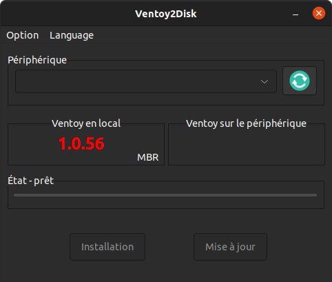

Documentation de Ventoy¶
Table des matières¶
Description de Ventoy¶
Ventoy est un utilitaire qui permet de créer une clé USB multi-boot. Il suffit de copier les fichiers ISO sur la clé USB et Ventoy les détectera automatiquement.
Installation de Ventoy (Multi-boot USB) - Linux¶
-
Télécharger le fichier tar.gz de la dernière version Ventoy sur le site officiel :
https://github.com/ventoy/Ventoy/releases/download/< version >/ventoy-< version >-linux.tar.gz
-
Placer vous dans le dossier de téléchargement où le fichier
ventoy-<version>-linux.tar.gzà été installé :cd ~/Téléchargements -
Déplacer le fichier tar.gz dans le dossier de votre choix, pour moi ce sera
/opt:sudo mv ventoy-<version>-linux.tar.gz /opt/ -
Placer vous dans le dossier
/opt:cd /opt -
Extraire le fichier tar.gz :
tar -xvf ventoy-<version>-linux.tar.gz -
Supprimer le fichier tar.gz :
sudo rm ventoy-<version>-linux.tar.gz`
Utilisation de Ventoy¶
Création d'une clé bootable avec Ventoy¶
- Brancher la clé USB
- Réinitialiser la clé USB
- Formater la clé USB en EXT4
- Ouvrez le gestionnaire de fichier
- Placer vous dans le dossier
/opt/ventoy-<version>/ - Activez les droits d'exécution du logiciel : clic droit sur '
VentoyGUI.x86_64' > 'propriété' > 'Permissions' > cochez 'Autoriser l'exécution du fichier comme un programme' -
Lancer le logiciel en mode GUI : Double cliquer sur le fichier
VentoyGUI.x86_64
-
Si l'anglais ne vous cinvient pas allez dans le menu '
Language' puis choisir la langue qui vous convient - Sélectionner la clé USB dans la liste déroulante '
Périphérique' - Cliquer sur le bouton '
Installer' - Une fois l'installation terminée, fermer la fenêtre
Ajouter des ISO dans la clé USB bootable préalablement créée avec Ventoy¶
-
Télécharger les ISO de votre choix.
- Lien pour télécharger les ISO de Ubuntu desktop : > https://www.ubuntu-fr.org/download/
- Lien pour télécharger les ISO de Ubuntu server : > https://ubuntu.com/download/server
-
Placer vous dans la racine de votre clé USB :
cd /media/${USER}/<nom_de_la_cle_USB> -
Créer un dossier pour chaque ISO :
mkdir <nom_du_dossier> -
Copier et synchroniser l'ISO dans le dossier :
- Cette opération prend plusieurs minutes
cp -v ~/Téléchargements/<nom_du_fichier_ISO> <nom_du_dossier>/ && sync
Démarrer un ordinateur sur une clé USB bootable créée avec Ventoy¶
- Brancher la clé USB sur un ordianateur éteint
- Démarrer l'ordinateur
- Quand le logo du constructeur apparait, appuyer sur la touche
F2(ouF12selon les constructeurs) pour accéder au BIOS. - Dans le BIOS, aller dans l'onglet '
Boot' ou 'Boot Configuration' Attention l'ordre et le nom de ces option peuvent varié en fonction du constructeur de votre PC mais la logique reste la même donc vous pouvez quand même vous appuyer sur cette documentation - Sélectionner '
Add New Boot Option' - Sélectionner '
Add boot option' - Entrer le nom que vous voulez, dans mon cas "
cle usb" - Sélectionner '
Path for boot option' - Sélectionner la partition qui correspond à votre clé USB, dans mon cas
PCI(10|0)\USB(2,0)\HD(Part2,Sig5FA02450)A partir d'ici il ne devrai plus y avoir de différence - Sélectionner le fichier
/EFI/BOOT/grub.efi. - Choisissez si vous voulez activé le '
Secure Boot', dans mon cas je le laisse désactivé pour éviter des potentiel erreur de compatibilité avec Debian 12. - Sélectionner le mode de Secure Boot entre '
Deployed Mode' et 'Audit Mode', dans mon cas j'ai laisser par défaut, c'est à dire 'Deployed Mode'. - Pour toute les question de '
Key Management' j'ai laisser les options par défaut. - Sélectionner '
Create' ou 'Add Boot Option' - Mettre la clé USB en premier dans la liste des périphériques de démarrage.
- Sauvegarder les modifications en appuyant sur '
APPLY CHANGES' - Quitter le BIOS en appuyant sur '
EXIT'.
- L'ordinateur vas redémarrer et vous allez arriver sur le menu de démarrage de Ventoy
- Sélectionner l'ISO que vous voulez démarrer
- Sélectionner le mode de démarrage, dans mon cas : '
Boot in normal mode' - Suiver les instructions d'installation de l'OS
- Si le système d'exploitation s'installe correctement mais que vous n'arrivez pas à démarrer dessus, il faut désactiver le Secure Boot dans le BIOS et désactiver la
Compatibility Support Module (CSM).
Licence¶
Copyright (C) 2024 Floris Robart
Authors: Floris Robart
This program is free software; you can redistribute it and/or modify it under the terms of the GNU Lesser General Public License as published by the Free Software Foundation; either version 2.1 of the License, or (at your option) any later version.
This program is distributed in the hope that it will be useful, but WITHOUT ANY WARRANTY; without even the implied warranty of MERCHANTABILITY or FITNESS FOR A PARTICULAR PURPOSE. See the GNU Lesser General Public License for more details.
You should have received a copy of the GNU Lesser General Public License along with this program; if not, write to the Free Software Foundation, Inc., 51 Franklin Street, Fifth Floor, Boston MA 02110-1301, USA.